Welcome to the AGREED, a comprehensive resource for understanding and integrating risk management practices into an agile context. In today's rapidly evolving business environment, managing risks effectively is crucial for project success. Traditional and bureaucratic risk management approaches often fall short in agile environments, where flexibility, collaboration, and adaptability are paramount. That's where the Essence Cards come into play. Traditional risk management approaches often fall short in agile environments, where flexibility, collaboration, and adaptability are paramount. That's where the Essence Semat Cards come into play.
This website is dedicated to introducing the innovative [model name] model for managing and understanding risks, documented in Essence Cards, visual and agile notation element. This powerful combination provides organizations with a practical and tangible approach to manage risks throughout the agile lifecycle. In the diagram below, you can navigate through the main elements of the model:
 See all cards